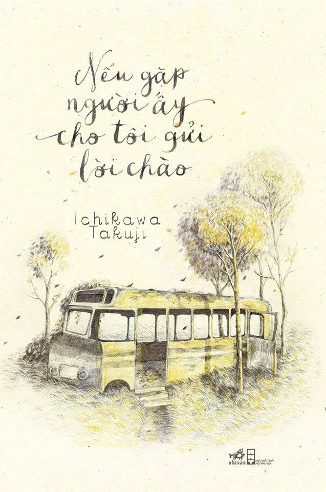

| NẾU GẶP NGƯỜI ẤY CHO TÔI GỬI LỜI CHÀO | |
|---|---|
|  | |
| Tác giả: Ichikawa Takuji | |
| Nhà xuất bản: Nhà xuất bản Hội Nhà Văn | |
| Chủ đề: Tiểu thuyết thanh thiếu niên | |
| Nội Dung: Nếu Gặp Người Ấy Cho Tôi Gửi Lời Chào là câu chuyện vừa trong trẻo, thuần khiết với tình bạn của 3 đứa trẻ “lập dị” nhưng vừa gợi trong ta bao cảm xúc về sự chờ đợi , sự tái ngộ và hơn hết là sự liên kết giữa mỗi con người trên thế giới rộng lớn này. Ba nhân vật chính được khắc họa dưới ngòi bút của tác giả Ichikawa Takuji với những nét rất riêng . Satoshi rụt rè, có tình yêu mãnh liệt với thủy sinh, Yuji thích rác, vẽ rác còn Karin lại là cô bạn trông có vẻ mạnh mẽ nhưng nội tâm lại sâu sắc. Ba đứa trẻ ấy tìm thấy nhau, có một tình bạn tuyệt vời nhưng lạc nhau và chờ đợi những 15 năm để được tái ngộ. Chưa hết, đó còn là câu chuyện tình lãng mạn, dễ thương giữa Karin va Satoshi, về thế giới giấc mơ đầy diệu kì nhưng lại không thể thoát ra được… Một câu chuyện nhẹ nhàng, đáng yêu và sâu sắc giữa Karin, Yuji và Satoshi. Mỗi nhân vật đều mang tính cách rất riêng, quấn quít bên nhau từ thuở thiếu thời và đến 15 năm sau tình bạn của họ vẫn còn mãi, trọn vẹn và bình dị. Còn có vẻ đẹp trong sáng, đơn thuần của tình yêu tuổi nhỏ thật đáng trân trọng biết bao. |
|